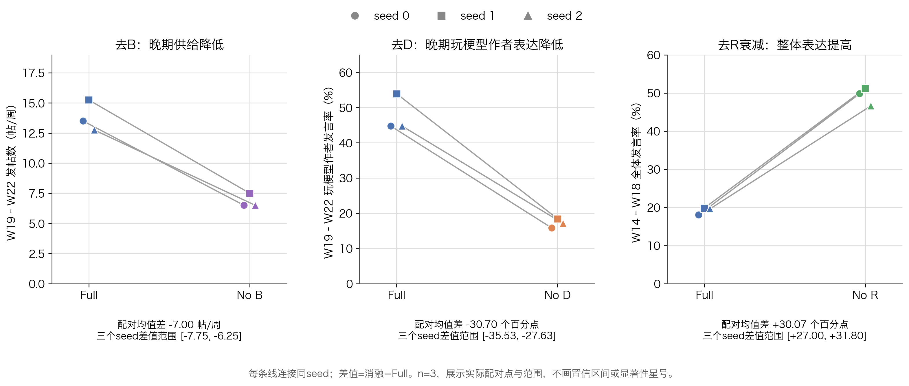
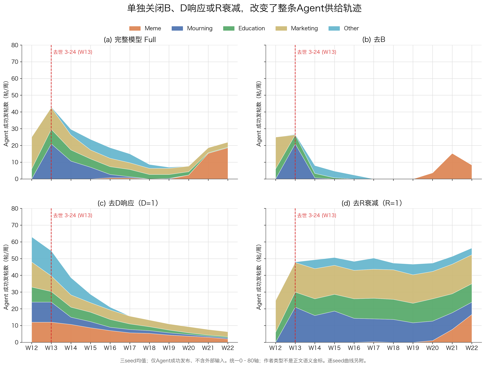

TIMESTAMP · INTEREST · PAIRED ABLATIONS
B, D and R ablations: paired timestamp-interest analysis
Conditional simulation evidence; n=3. Batch and API differences in reused Full may affect generated feedback.
12 runs3 paired seeds13,200 opportunities0 new LLM calls
1. Scope and data
This analysis concerns only the frozen timestamp-interest regime. The three Full runs are timestamp_v1_interest_s0/s1/s2. Each ablation is paired with the same-seed Full and retains its external sample, population, thresholds, action schedule and scientific configuration. After normalizing operational paths, only the designated component parameter differs. All three seeds share the population and action schedule; they are not three population samples.
All 12 runs completed 693 steps and 1,100 opportunities each: 13,200 opportunities, 3,309 speaking decisions, all successfully published, and 9,891 below-threshold decisions. There were no empty feeds or action/generation/publication failures. The nine ablations produced 2,652 posts with 2,657 outer provider requests. This analysis added no model calls. Official replay queries were cross-checked against weekly environment counts and individual Agent decision logs.
The seed is the paired unit. Prespecified primary measures are: B, mean weekly successful posts over W19–W22, computed within each run first; D, meme-author speaking decisions over 76 opportunities in W19–W22; R, all-author speaking decisions over 500 opportunities in W14–W18. Every difference is ablation minus same-seed Full. With only three pairs, we show the observed differences and min–max range, without significance tests or confidence intervals, and do not treat weeks or opportunities as independent replicates.
Full and ablations were generated in separate batches. The ablation API route changed from coding/v3 to plan/v3. Requests pinned deepseek-v4-1-flash-260910, while Full and earlier ablations returned deepseek-v4-1-flash and later ablations returned the full version identifier. The Full runtime plan records the service host but not a fully auditable API path. Matching requested identifiers and frozen code/inputs does not establish identical backend behavior or stochastic text generation. Same-seed pairing does not eliminate this remaining limitation.
Each cell is successful posts / outer provider requests over the full 11-week run.
2. Prespecified paired outcomes
All three seeds agree on the direction of each primary contrast. Removing B reduces late mean supply from 13.83 to 6.83 posts/week; removing D response reduces late meme-author speaking from 47.81% to 17.11%; removing R decay raises W14–W18 overall speaking from 19.13% to 49.20%. Rate differences below are percentage points.

Figure 2. Prespecified paired measures. Each line connects the same seed; differences are ablation minus Full and ranges are not confidence intervals. SVG · PDF3. B: sustaining late supply and non-meme-author participation
No B reduces late supply by 7.00 posts/week on average; seed differences are -7.00, -7.75 and -6.25. Across the four late weeks, non-meme authors decline from 19.00 posts per run to zero, while meme authors also decline from 36.33 to 27.33. Their share nevertheless rises from 65.61% to 100%. The larger share comes from other types disappearing, not increased absolute meme-author production.
The algebra is consistent with this result: at a fixed state, Full minus no B equals (1−R)B, which vanishes at R=1. Auditing observed W12 decisions finds R=1 in every seed, equal U at recorded precision and equal publication decisions. Subsequent feedback produces divergence. B is not a fixed bonus independent of R; its weight increases as R declines.
Table: three-seed mean four-week counts over W19–W22; shares are computed per run before averaging.

Figure 1. Mean author-type supply over three seeds. Template colors, W13 event line and 0–80 scale are retained; only successful Agent publications are counted. Individual-seed charts are linked below. SVG · PDF4. D: selective timing rather than a one-way supply multiplier
No D sets D=1, not zero. Total full-window supply rises from 219.00 to 269.33 posts/run, yet late meme-author speaking falls by 30.70 percentage points and late meme-author posts fall from 36.33 to 13.00. Late expression remains possible; these results do not establish D as necessary for every late speaking decision.
With no D, 12 meme authors speak on average in each of W12 and W13, versus zero in Full. Expression shifts earlier and then declines. By the late window, meme-label exposure among meme authors increases from 25.18% to 31.18%, mean cumulative own-type exposure rises from 2.36 to 11.45, and mean R falls from 0.835 to 0.414 despite less late expression. This supports a feedback interpretation involving timing, generated supply and accumulated-exposure decay; it does not separately identify mediation or reduce the result to a contemporaneous mean D difference.
Early speaking by a meme- or mourning-type author does not establish the corresponding text semantics. For example, no-D mourning authors publish 36 W12 posts across seeds; the existing vocabulary classifier assigns 29 to marketing and seven to mourning. This is disagreement between author and vocabulary labels, not a human judgment of premature mourning or factual hallucination.
 Figure 3. Overall and meme-author speaking trajectories. Solid lines are means; bands are the observed three-seed min–max, not confidence intervals. SVG · PDF
Figure 3. Overall and meme-author speaking trajectories. Solid lines are means; bands are the observed three-seed min–max, not confidence intervals. SVG · PDF5. R: limiting sustained output and reshaping late group advantage
Setting R=1 increases W14–W18 overall speaking by 30.07 percentage points; the three differences are +31.80, +31.40 and +27.00. Late total supply rises from 13.83 to 50.42 posts/week. Mourning authors still publish 13.67 posts on average in W18, versus zero in Full. Accumulated-own-type-exposure decay therefore substantially constrains sustained post-event output in this configuration.
Not every author group becomes more active. Late meme-author posts fall from 36.33 to 25.33 per run and their share falls from 65.61% to 12.56%; meme-label exposure among them drops from 25.18% to 13.11%, with mean D falling from 1.009 to 0.835. Education, marketing, mourning and other authors account for much of the sustained supply. These are joint feedback changes, not a direct effect on each group.
R responds to cumulative own-type exposure rather than calendar time alone. At R=1, U=D and the coefficient on B also becomes zero. This contrast tests the entire decay-and-return-to-B mechanism, not an orthogonal R effect with B held influential.
6. Opposing aggregate and subgroup effects: verified facts versus inference
Verified: removing D raises total mean output from 219.00 to 269.33. Meme-author output increases from 1.33 to 61.33 over W12–W18 but falls from 36.33 to 13.00 over W19–W22. Its full-window output increases from 37.67 to 74.33: the reduction is late, not throughout the run.
In seed0 Agent12 at W12, own-type share and cumulative exposure are zero in both records: Full has D=0.526 and U=0.526 below threshold 0.9445, while no D has D=1 and U=1 and publishes. Later no D accumulates more own-type reading and lower R. R tracks reading exposure, not the author’s own number of posts; the 19 weekly opportunities remain fixed.
Verified: no R lowers full-window mean meme-author output from 37.67 to 25.67, but raises other-author output from 181.33 to 495.00 and total output from 219.00 to 520.67. Late paired records contain 34 Full-speaking/no-R-silent cases and one reverse case: a net loss of 33 posts, or 11 per run. All 34 losses have lower D in no R.
Algebraic implication: every meme-author threshold exceeds B. At a Full state that already speaks, fixing D and setting R=1 yields U=D and cannot silence that author. Observed losses therefore involve changed D along the feedback trajectory, rather than a same-state direct reduction from removing R. This is an algebraic check, not another counterfactual simulation.
Mechanistic inference: no D releases early suppression and changes later feeds and exposure decay while removing late D>1 amplification; no R sustains other authors, with weaker own-type reading and D for meme authors. Records support these feedback explanations without separately identifying recommendation, generated text and cumulative-exposure mediation. Generated pool labels follow author type and are not human semantic gold.
Each cell is total / meme-author posts, averaged over three seeds. Below: original seed0 Agent12 W20 records; threshold is 0.9445 throughout, values shown to four decimals.
7. Supported conclusions and limits
For these frozen timestamp-interest inputs and parameters, the results support B sustaining late supply and some author-type diversity, D response shaping early suppression and late selective expression, and R decay limiting sustained overall output while interacting with B and D to reshape composition. Contrasts cannot be added as contribution percentages. Single-parameter interventions allow feeds, exposure and text to diverge, so estimates are closed-loop total changes.
The evidence does not establish universal necessity in the real world or across curation regimes, general preference change, or independently verified meme semantics for all meme-author text. Stacked charts use fixed author pool_type. Observed feed labels and vocabulary assigned_type are separately reported; vocabulary labels are not human semantic gold.
Other limitations include n=3 with a shared population/schedule, one interest regime, the retained 17-post initial history and conditional W13 opportunities, existing B scaling/floor and thresholds, temperature-1 generation, and temporal/API/backend differences. No new LLM, concurrent Full, combined ablation, or additional model review was run. The user accepted these bounded findings and authorized main-workspace adoption; no independent model review was performed.
Illustrative text divergences and evidence
B: seed0, Agent13, 2026-W19 (marketing)
full: U=0.8650, threshold=0.7958, R=0.1500, D=1.0910
刷到@58和@13在聊信息差，说句实在的：把坑提前讲明白，确实不等于替你走完路，升学不是做对几道题就能改命，方向、分数、家里的底子得放一块儿算。
但另一面也得说：连有哪些选项都不知道，谈“看孩子自己”就有点奢侈。我这几年干的就是把这些摊开讲——院校专业梯度怎么排、不同分数段怎么搭、哪些项目千万别碰，讲清楚，再让孩子自己选，这两件事不冲突。
最近整理了一份志愿填报避坑思路，评论区扣“信息”我发你，想听直播拆解也可以说一声。别等出分那几天才慌。
no_b: U=0.2381, threshold=0.7958, R=0.2192, D=1.0862
No post (below threshold)
D: seed0, Agent12, 2026-W20 (meme)
full: U=0.9795, threshold=0.9445, R=0.7676, D=1.0413
刷到张雪峰那句"我倒要看看你儿子报不报新闻学"，我整个人：这孩子的志愿填报能不能开个直播[吃瓜] 全程无广，纯真人秀。
然后同框又刷到个"雪糕怎么发紫 看我三口一个#张雪峰"，好家伙这紫雪糕怕不是新闻学专业毕业的，被问急了。
再往下滑，六升七暑假计划表比我打工排班还满……六升七，升完七还得升八，建议一步到位升到退休[裂开] 准初一的爹妈先放过孩子也放过自己吧。
（至于刷到悼念帖那种，这会儿就不抖机灵了，安静划过。）
no_d: U=0.8534, threshold=0.9445, R=0.3471, D=1.0000
No post (below threshold)
R: seed0, Agent30, 2026-W14 (mourning)
full: U=0.9864, threshold=1.0399, R=0.4055, D=1.3069
No post (below threshold)
no_r: U=1.3069, threshold=1.0399, R=1.0000, D=1.3069
刷到几条相关帖子，有讣告、殡仪馆外排队的描述，也有“走了”这个词。但我看到的来源多是转述或标注未核实，没法替谁确认。真正让我停下来的是留言里的那些话：考研二战的晚上靠直播撑过去，普通家庭的孩子少走弯路。争论之外，有人确实被那些直白的话托住过。别让未经证实的图再跑来跑去；还在熬的人，也别硬扛，先照顾好自己。
Examples are the first matching divergence ordered by seed/week/ID, not random samples or effect estimators. Full source coordinates and text are in data/illustrative_examples.json; author type is not text semantics.